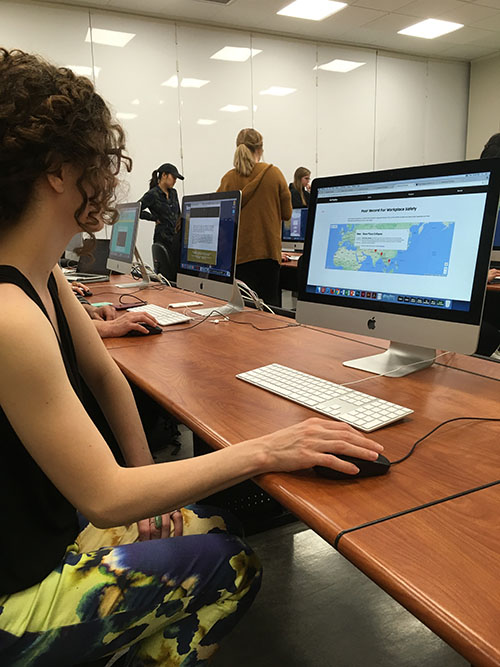

I was able to observe two people navigate my site. Julia thought that there could be more content on the map to show more information. She also appreciated the tone of the website and how it was really colorful and visual. She didn't really have any problems navigating it either. My second audience member had a little more trouble figuring out what was a link and what wasn't, which meant it took her a little more time to go through the site. She thought that there could be more information about the life cycle of clothing and how every garment goes from production to the market to the waste stream. Overall, I thought that the feedback showed what a large and complex issue fashion waste is and that this website could be more informational.